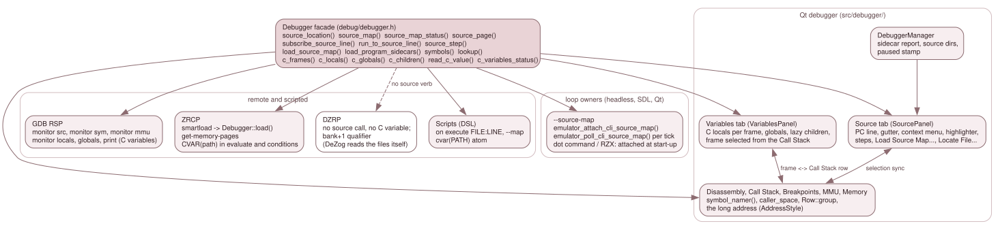

7.7 The frontends¶
Every frontend reaches the stores through the backend facade
(src/debug/debugger.h) and nothing else; none holds a SourceMap or a
SymbolTable. This page says what each one reads, and describes in full the
only one with a source view: the Qt debugger's Source tab. For the verbs
themselves see 3.9.1; for a user's
steps see chapter 10 of the user guide, Source-level debugging.

The facade at the top is the whole interface. The Qt window is the only frontend that draws source text; GDB, ZRCP and scripts print or subscribe; DZRP has no source surface at all.
| Frontend | Reads | Adds | Page |
|---|---|---|---|
| Qt debugger | source_location(), source_map(), source_map_status(), source_page(), lookup(), the breakpoint groups, executed_source_lines() |
The Source tab, the Breakpoints rows, the Call Stack column, symbol names, the long address | below, and 3.10.2 |
| GDB RSP | source_location(), symbols(), mmu_slots() |
monitor src, monitor sym, monitor mmu |
3.10.4 |
| ZRCP | load(), mmu_slots() |
smartload reaches the sidecars; get-memory-pages names the memory |
3.10.5 |
| DZRP | Nothing | None | 3.10.3 |
| Scripts | source_map().resolve(), load_map() |
on execute FILE:LINE, --map |
3.10.6 |
| Loop owners (headless, SDL, Qt) | load_source_map(), source_map_status() |
--source-map |
7.3 |
The Qt Source tab¶
SourcePanel (src/debugger/source_panel.*) shows the line of the PC from the
backend's source map and carries the source-step buttons. It holds no copy of the
map. What it keeps is presentation: the file shown (shown_file_), the text loaded
and its modification time (loaded_source_, loaded_mtime_), whether the view was
placed (placed_), the Disassembly's selection (disasm_range_), the address being
browsed (browse_addr_) and the reason report_sidecars() gave it.
What one refresh does¶
SourcePanel::refresh_() (source_panel.cpp:589) runs while the machine is paused,
whenever the window's paused stamp changed (3.10.2:
the stamp carries a flag for "the loaded file changed on disk",
DebuggerManager::paused_stamp(), debugger_manager.cpp:820; the flag is
SourcePanel::file_changed_on_disk(), source_panel.cpp:550). In order:
update_buttons(paused)(:493): the forward steps need a paused machine and a non-empty map; Back and Reverse Continue also needrewind_blocked()empty and the trace on. It emitssteps_available(forward, backward), so the Debug > Source menu items and the buttons share one predicate.- Running:
show_running()says "Running", drops the highlight and the browse. source_map_status()says Stale or None: a message and nothing else (show_message()). A pending status appends a note to whatever is shown: Source map not verified yet: it is checked when the program first runs its code, or for a dot command ...when the dot command runs (:621).- The location is
source_location(pc), or, while browsing,source_location(browse_addr_)(the browse ends if that address has no line now, or another map is loaded,:630-640). The memory shown in the label ismemtext::text(dbg_, style_, source_page(addr), addr)(:646). - The text. A file the map carries as embedded text (
SourceMap::embedded_text(), the m4 output of the CRT fromprog.lis, 7.2) is shown from the map and labelled(m4 output, from <listing>). Otherwise a z88dk record in a.m4file with no embedded text gets a message of its own, decided before any file is read (z88dk counts the m4 output, which the build does not keep). Otherwisesource_search::resolve()finds the file (below); no file gives "source file not found" and enables Locate File. A file is reloaded when its modification time changes, so an edit-and-rebuild never highlights a line of the old text (:690-703). A line past the end of the file found gives "has only N lines; it is not the text the build used" (:711; the line count ignores the final newline,file_line_count(),:59). The label's tooltip is the path found. - The label ends with
SourcePanel::also_text()(:574):lookup_all()for the address, minus the primary and any entry with the samefile:line, asalso: f:l, ...; then the browse text(browsing; the PC is at f:l, $addr); then the pending note. - The extra selections, in this order so a later one wins on its own line: memory coverage
(
executed_source_lines(), tintcoverage_line), the Disassembly's linked lines (linked_lines_(), tintlinked_line), the PC's line (the editor'sHighlight, only when the file shown is the PC's file). - Placement. The cursor moves and the view centres only when something moved: the line,
the address,
placed_cleared orplace_now_set (:795-810). A browse centres only a line that is out of view. A user who scrolled away on a paused tick stays put.
follow_pc() (:556) clears placed_ and the browse and refreshes at once. It changes what
the tab shows without moving the machine, so the paused stamp cannot see it;
DebuggerWindow::activate_follow_pc() (debugger_window.cpp:1558) calls it, and
apply_pause_state(true) runs that at every stop and step, so a stop at the very PC and line
already shown still puts the view back.
Finding the file¶
source_search::resolve(recorded, map_file, dirs) (src/debug/source_search.h, Qt-free so
the SDL-only and Windows trees test it): an absolute name; then the map's directory and each
of its parents; then the search directories; tried suffix-major, the longest trailing part of
the normalised name first, then the directories in order; a leading .. is dropped.
DebuggerManager owns the list: set_source_dirs() (debugger_manager.cpp:304) takes the
configured one (MainWindow::push_source_dirs(), main_window.cpp:3125, fed by
apply_startup_config(), :2907: the saved list with the command line's --source-dir or
paths.source_dirs value over it), and Locate File... (SourcePanel::locate_file(), source_panel.cpp:437)
adds to a second, session-only list through on_source_dir_located() (:316). The effective
list (configured, then located, duplicates dropped) is pushed to the panel by
push_source_dirs() (:296) on every change and again in ensure_window(), since the window is
created lazily. Locate derives the directory with source_search::root_for(), refuses a file of
another name, and asks whether to save it; source_dir_save_requested is MainWindow's, which
appends to [paths] source_dirs and refuses a directory that holds the list separator, as
Preferences and --source-dir do: it would load back as two (it stays searched for the session). The
session-only list is kept when the configured list changes (set_source_dirs() touches only the
configured one). The
manager announces each change (source_dirs_changed, because src/debugger/ names no logger)
and MainWindow logs Source search path: ....
Loading a map by hand¶
The Source tab's Load Source Map... button and the Debug > Source > Load Source Map... item
are one slot, DebuggerManager::on_load_sld() (debugger_manager.cpp:714). Its file dialog
offers *.sld, *.sld.txt and *.map; the backend tells the format by content
(7.3), so a z88dk map loads as source lines only, and the mismatch box and the
failure title name no format. The Map menu's Load MAP File items load symbols through
load_map(); they append the backend's reason to their failure box when a file was refused
rather than unreadable. The sidecar report is DebuggerManager::report_sidecars() (:756):
the log, and the main window's status bar for ten seconds.
Colouring¶
SourceHighlighter (source_highlighter.*, a QSyntaxHighlighter that exists only in
jnext_debugger; GH #422).
- The language.
source_language_for(file, text)(source_highlighter.cpp:409): the extension, lower-cased, with a trailing.m4dropped (zxn_crt.asm.m4is assembly):candhare C;asm,s,z80andincare assembly;basis Boriel. Otherwise the first 200 lines vote: a line counts for a language when its first word is in that language's set alone (a column-0 label is skipped); the winner needs three votes and strictly more than the others (kMinVotes,:463); else Plain. - The word tables. The Z80/Z80N mnemonics and register words are not listed anywhere: they
are enumerated once from
disasm_one()over the seven opcode pages, so a new Z80N opcode is coloured the day the disassembler names it. The directive, C and Boriel tables are committed with the upstream file and commit they were read from (z80asmscan_def.handkeyword.def, sjasmplusdirectives.cpp, ISO C11 6.4.1, Borielkeywords.py). - The scanners are hand-written, linear per line, and carry multi-line comments and embedded
assembly in the block state. The classes are the owner's ten (
Role: Text, Keyword, Instruction, Preprocessor, Label, String, Char, Integer, Float, Comment); Text is the editor palette's text colour and never a format. Punctuation and operators (kKeywordPunct,:280) are Keyword, tested at each scanner's fall-through point after comment, string, char, number and word detection, so those win; Qt merges adjacent equal formats, so->or<<=is one Keyword range. A sign is part of a number only inside an exponent (-5is a Keyword and an Integer). C and Boriel numbers have their own scanners: Float is a point or an exponent, including the C hex-floatpexponent; Boriel'st_HEXA,t_OCTALandt_BINare tried beforet_NUMBER, and a$or%suffix belongs to its identifier. The scanners are allocation-free per word. Formats set the foreground colour and nothing else, so the line geometry and the gutter alignment equal Plain's. - Entering a text.
SourcePanel::set_source_text()(source_panel.cpp:513) is the one way: the language first, then the text, so a load is highlighted once with its own language. - Schemes.
SourceScheme(platform/source_scheme.h) is the order of the words of thesource.colour_schemekey: Auto, Light, Dark, Borland (static_asserts inapp_config.cppandsource_highlighter.cpp:470).scheme_colours()(:587) holds one table per concrete scheme: background, text, the current-line bar's two colours, the coverage and linked-line tints, and a colour per class. Dark is derived, not kept:palette_tint::ink()of each Light colour over a fixed dark palette (#242424and#F0F0F0,make_dark(),:531), so it does not depend on the application's own dark palette. Every scheme meets one legibility rule, which rowQSRC-195checks: text and classes 4.5:1 against the background (WCAG 1.4.3), bar text 4.5:1, bar against background 3:1, and any two colours at least CIE76 12 apart unless the scheme declares them shared (Borland's owner-given groups). - Applying one.
SourcePanel::apply_scheme_()(:524) takes the panel's palette (the application's, never the editor's) in, resolves Auto against it (resolve_scheme()), hands the classes to the highlighter (apply_palette()rehighlights only when a class colour changed, never on a paused tick or a repeat) and puts the background, text and bar colours on the editor's palette (Base,Text,Highlight,HighlightedText). The background is a palette role, not a format, so it fills the whole viewport.set_colour_scheme()(:541) applies at once (Preferences Apply while the machine runs) and refreshes, because the tints are selectionsrefresh_()builds and a paused tick redraws only when the machine moved. The setting is held byDebuggerManager::set_source_scheme()(debugger_manager.cpp:310) and pushed byensure_window(), fed byMainWindow::apply_startup_config(). - What a scheme does not reach. The gutter and its header paint from the panel's palette, so
a scheme never colours them, and the breakpoint marks stay as they are. The current-line marker
is an
ExtraSelectionreading the editor'sHighlight; Qt draws a selection's colours over the layout's formats, so no syntax colour shows on that line.
The gutter and breakpoints¶
The editor is a private QPlainTextEdit subclass, SourceEdit (source_panel.cpp:98), with a
gutter widget in a left viewport margin and a header strip above it (setViewportMargins; objects
source_gutter and source_gutter_header), because the visible blocks' geometry is protected.
- Columns.
BP | Line(GH #421): the number isblockNumber() + 1(paint_gutter(),:154). - The mark of a line is computed at paint time, for the visible lines only
(
SourcePanel::line_mark(),:969, overline_state(),:924), so it is never stale and needs no cache.line_state()derives, for line L of the file shown:starts(where the map says L begins, fromresolve(file:line), so an alias line is marked),placed(those starts the memory mapped now supplies),drawn(this GUI's Execute breakpoints, fromBreakpointModel::pc_breakpoints(), that the Disassembly would draw: a logical one, or one tied tosource_page(addr), sitting on a placed start or on any instruction whose primary line is L),hidden(breakpoints tied to exactly a start whose memory is not mapped now) andarmed(starts carrying one of this GUI's Execute breakpoints, mapped now or not). Every start armed is the full glyph, some the left half; a line is drawn at all only while a breakpoint is drawn on it.breakpoint_glyph.hpaints the glyph for both panels. - The PC wedge (GH #347):
paint_pc_marker()(breakpoint_glyph.h:46), the amber wedgepaint_gutter()draws onhighlighted_line()only, in the 5-px strip after the number cell (xin[width-6, width-2], which no pinned pixel reading uses); the colour goes throughpalette_tint::ink(), and the text highlight stays the palette's own. - A click calls
SourcePanel::toggle_breakpoint_at_line()(:1012), the one toggle: it removes what the line shows plus a hidden group tied to an unmapped memory, elseadd_source_line()(not idempotent, hence the check). The context menu of GH #423 calls the same function. A line with no code shows the store's reason as a tooltip. - In the model.
BreakpointModellists an Execute subscription with a fetch-source qualifier as the GUI's own row (Row::space). Afile:lineis one backend group (subscribe_source_line()) armed at every place it compiled to, and the model folds the group into ONE row with its location count (Row::group,Row::locations; the Symbol / Source cell readsmain.bas:11 (2 locations)). Remove, the Enabled cell and Edit act on the whole group, and the row is enabled only while every location is. The Add and Edit dialogs and Breakpoints > Add Execute Breakpoint share that rule and show the store's reason ("no code at main.bas:5"). The gutter draws a location only while itsFetchSourcesupplies the address (pc_marked(addr, space)), and a click on its dot removes that location, not the group. The Call Stack's last column looks up each frame's caller with its recordedFetchSource(CallFrame::caller_space).
The context menu¶
SourcePanel::fill_context_menu() (:1127, called from the editor's and the gutter's
contextMenuEvent) offers the Disassembly's actions on the source line: Copy, Copy with Addresses,
Select All; Toggle Breakpoint; Run to Here (run_to_line_requested, which DebuggerManager runs as
Debugger::run_to_source_line behind its corruption gate; Enter in the editor and the bindable Run to
Cursor, while the tab has the focus, are the same request); Show in Disassembly
(show_address_requested, DisasmPanel::show_address()); and the watch and data-breakpoint entries.
Those entries come from operand_menu.{h,cpp} (add_operand_actions()), shared with the
Disassembly's own menu so the two cannot differ. The Source tab fills a MenuOperands from the
labels at the line's places and the word under the pointer. A word is classified as a register in
parentheses, a number or a name, and a name goes through SourcePanel::symbol_for_word() (:1037),
the single seam for the C names (resolve_key("@" + word); @ forces a symbol).
Selection sync with the Disassembly (GH #347)¶
DebuggerWindow::create_panels() wires the two panels with three connections
(debugger_window.cpp:1458-1475), and nothing else couples them. Each carries only what the user
did in its sender, so no move echoes.
- Source to Disassembly.
SourcePanel::source_lines_selected(file, first, last, reveal)is emitted byemit_lines_()(:859), only when the file or the lines changed (lines_file_,lines_first_,lines_last_; a message and Running emit an empty file, andnone = truesays the text stays but nothing of it is selected). The lines areselected_blocks_()'s, the same rule as Copy with Addresses (a selection ending at a block start does not take that block). The editor'scursorPositionChanged/selectionChangedslot passesreveal = true(:403-408); a move the panel makes itself (the PC placement ofrefresh_(), a text load,set_disasm_selection()) runs under aSyncScope(syncing_), so that slot stays silent, and ends withemit_lines_(false, ...), so a stop tints the PC statement's other instructions without scrolling.DisasmPanel::set_source_lines()(disasm_panel.cpp:437) stores the range; a row is linked (source_linked(),linked_at_(),:424-432) whenlookup_all()in its own space has a location on a selected line of that file, the primary or not.paintEventfills a linked row withsource_sync_colors::linked()before the PC row, the selection and the coverage bar. Withrevealand no linked row in view, the view centres on the first start ofresolve(file:line)that is mapped now; otherwise it never moves. - Disassembly to Source.
DisasmPanel::selection_changed(lo, hi, caret)comes from the user paths only (notify_selection_(),:412: a press, a drag, a navigation key, Select All, the menu's collapse), when the triple differs from the last one sent.show_address()and a refresh do not emit;set_source_lines()forgets the last triple, so the next click on the same lines is a change again.SourcePanel::set_disasm_selection()(source_panel.cpp:816) is ignored while running or without a map, stores the range (disasm_range_, dropped when the machine runs, so a stop shows no tint of it), and setsbrowse_addr_unless the caret's primary line is the PC's own statement.refresh_()then describesbrowse_addr_instead of the PC. The lines of the instructions in the range (linked_lines_(),:878, walkinginstruction_lengthovermemory_reader()) get anExtraSelectionin the scheme'slinked_line, after the coverage tints and before the PC's. There is no cache of those lines: a full 64K range cost about 3.5 ms when #347 was written (a figure from its design, not re-measured here), and it is paid at eachrefresh(), which since #428 runs only when the paused stamp changed, not on every tick. - Show in Source.
DisasmPanel::show_source_requested(addr), from a menu item present only while a map is loaded and enabled only wherelookup()finds a line. The window raises the Source tab and callsSourcePanel::show_address()(:835).
Browsing ends at follow_pc() (every stop), show_running(), the map going away (the None and Stale
branches of refresh_()), another loaded map (browse_map_), an address with no line now, and Go to
PC Line (go_to_pc_line(), :841). A message about the browsed line itself (file not found, a .m4
line without a listing) does not end it, so the message and Locate File... stay usable, and Go to PC Line stays enabled. Every accepted
Disassembly selection places the cursor on the caret's line (place_now_, cleared by the placement
itself, so the next ticks leave the cursor and scroll alone). A Source move made while the machine runs
announces nothing. The gutter, the menu, Copy with Addresses and Run to Cursor act on shown_file_, so
they act on the file browsed. Rows QSRC-176 to QSRC-189 and QSRC-201 to QSRC-208 pin the
behaviour; source_sync_colors.h is the one definition of the linked colour for both views; the Source tab keeps one
per scheme (SchemeColours::linked_line), tested for legibility like the coverage tint (row QSRC-189).
Which memory a view names (GH #360)¶
Every Qt view names the memory behind an address through debug/long_address.h
(7.1) and nowhere else. The Qt-side wrapper is src/debugger/memory_text.h:
memtext::text(dbg, style, space, addr) (:26) and memtext::next_layout(dbg) (:20), which is
true only for the Next machine type (MachineType::ZXN_ISSUE2); any other machine prints the Friendly
tag whatever the style.
DebuggerWindow holds one AddressStyle and hands it to each panel (set_address_style(),
apply_address_style()) and to the BreakpointModel, whose rows are spelled in it; a toggle refreshes
them all. The style is the setting debugger.physical_addresses (Debug > Physical Addresses, --set,
a run override like debugger.attached).
Which space a view prints is a rule per view (design 10.3):
- The line at
PCand the Source tab show the fetch prediction (source_page()). - The other Disassembly lines, the MMU panel, the Memory panel's CPU view, Watches and Stack show the
live data route of the address's slot (
SlotInfo::now), the memory the bytes beside the tag came from. - The Memory panel's Slot and Page views show the space shown; a slot paged to nothing (NR >= 0xE0) is
FLOAT, never a page the tag grammar refuses. - The Call Stack and the Breakpoints list show the recorded identity.
- Where a qualifier was already printed the tag replaces it in place; elsewhere a column was added
(Disassembly Mem, MMU Memory, Watches and Stack Memory, Call Stack Caller and
Target memory). The Memory panel paints its tag as the item after the ASCII column, so
dump_row()and the coverage underline never move. The legacy page qualifier of another client keeps its@NN, which is a different thing (7.1).
The instruction at the PC is read as the CPU will fetch it, not as a data read.
Debugger::memory_reader() (debugger_inspect.cpp:838) takes the bytes of that one instruction
(at most four) from Emulator::predict_instruction_bytes() and every other address from
Mmu::peek(); at a DivMMC instant entry the M1 itself maps DivMMC, so a peek at the PC would show
other bytes than the ones that execute. The Disassembly, step_over() (debugger_control.cpp:184,190:
is_call_like() and instruction_length() read through it) and ZRCP cpu-step-over
(ZrcpServer::cmd_cpu_step_over) all use it (rows LADDR-17 to LADDR-20).
GDB, ZRCP, DZRP, scripts¶
GDB RSP (src/remote/gdb/rsp_server.cpp). monitor src [ADDR] (monitor_src(), :1033) prints
$8CB8 main.c:19 P04 or $8CB8 unmapped P28: source_location() and the tag of
source_page(addr). monitor sym (monitor_sym(), :996) prints the tag of the memory the lookup
used; a name prints its tag when it is paged. monitor mmu (monitor_mmu(), :893) prints each slot's now tag and,
on the Next, the physical text of the slot's first byte. The server's own symbol and source verbs are
described in 3.10.4.
ZRCP. smartload "file" (ZrcpServer::cmd_smartload, zrcp_server.cpp:2625) calls
Debugger::load(), which calls load_program_sidecars() after a successful load
(debugger_reconstruct.cpp:464, :527-531), so a program loaded over ZRCP gets its symbols and
source map like --load, and a refused sidecar is logged to every client as a Warn line.
get-memory-pages (memory_pages(), zrcp_format.cpp) names the eight slots of a Next from what each
reads now (SlotInfo::now): RO the boot ROM, O<n> the 8 KB ROM page 2*image + half, A<n> RAM,
SR<n> config-mode SRAM, DIV DivMMC; the overlays ZEsarUX has no spelling for print the slot's own
mapping. On the other machines segment 0 is DIV while DivMMC is paged in.
DZRP. No source surface: grep finds no source_* call in src/remote/dzrp. DeZog reads the SLD
or the map itself. What DZRP shares with this chapter is the legacy bank+1 qualifier
(7.1). CMD_GET_REGISTERS reports 0xFF for every ROM slot
(cmd_get_registers(), dzrp_server.cpp:549-553), because DeZog has no bank for the ROM values
0xE0-0xFE.
Scripts. on execute FILE:LINE resolves through source_map().resolve() at load time and
subscribes one Execute per start, each with the space its place was compiled for
(script_engine.cpp:330); an unknown line is a diagnostic that names the reason. --map loads symbols
with MapFormat::Z88dkOrSjasmplus (script_host.cpp:187, 7.3). Held scripts and the
rest of the language are in 3.10.6.
Headless, SDL, Qt loops. --source-map is attached by emulator_attach_cli_source_map() after the
first successful --load (or at start-up for a dot command or an RZX replay, 7.3) and
watched per tick by emulator_poll_cli_source_map() (source_map_watch_ in HeadlessApp, SdlApp and
QtApp); a map dropped by the identity check sets exit code 1.